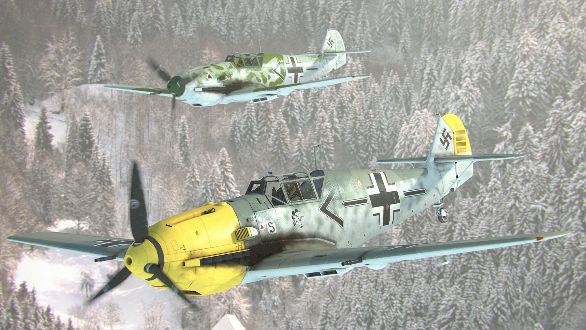
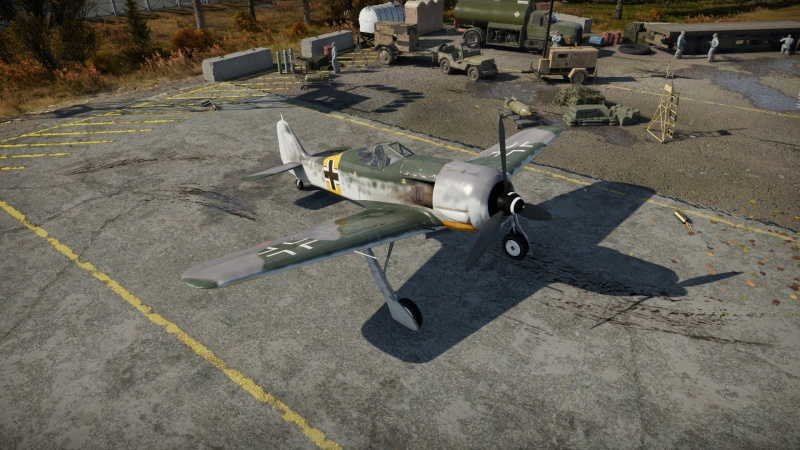

VĀCU GAISA KARASPĒKS
|  |
Bf 109 E-3 ir II ranga vācu iznīcinātājs ar kaujas reitingu 2,7
(AB/RB/SB). Tas ir bijis spēlē kopš atvērtā beta testa sākuma
pirms atjauninājuma 1.27.Pēc Bf 109 E-1 pieredzes spēlētāji
priecāsies, atbloķējot E-3. Lai gan būtībā tā ir viena
spārniem piestiprinātiem 20 mm MG FF lielgabaliem lidmašīnai
ir nāvējošs trieciens. Spēlētāji, kuriem labi veicās E-1 un apguva
savu Bf 109 amatu, varēs lieliski izmantot savu jauno bf.
Cīņa ar E-3 būtībā ir tāda pati kā E-1 ar atšķirību, ka pilots tagad
var droši nosūtīt ienaidniekus īsā uzliesmojumu laikā. link uz pilnu tekstu, |
| |
Fw 190 A-4 ir III ranga vācu iznīcinātājs ar kaujas
reitingu 4,3 (AB/RB) un 4,0 (SB). Tas tika ieviests
atjauninājumā 1.43
link uz pilnu tekstu, |
|  |
Fw 190 A -5/U2 ir III ranga vācu iznīcinātājs ar kaujas reitingu 4,3 (AB/RB) un 4,7 (SB).
Tas ir bijis spēlē kopš atvērtā beta testa sākuma pirms atjauninājuma 1.27. "Würger" ir šī
lidmašīnas zvēra vācu segvārds. To var tulkot kā slayer , choker vai strangler .
link uz pilnu tekstu, |
grafs
{kind=link}
{kind=link}
{kind=link}